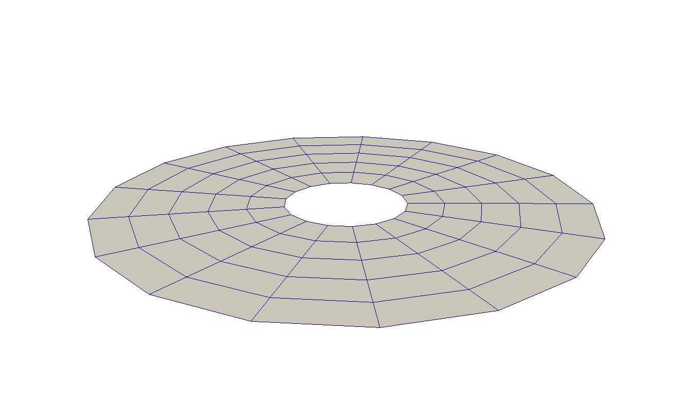

- extrusion_vectorThe direction and length of the extrusion
C++ Type:libMesh::VectorValue
Description:The direction and length of the extrusion
MeshExtruder
The mesh extruder is a tool for increasing the dimensionality of a lower dimension mesh (1D or 2D). Each element is converted to one or more copies of its corresponding higher dimensional element along the specified axis. The Mesh Extruder can also add in the extra sidesets resulting from increasing the dimensionality of the original mesh. Existing sidesets are extruded.

2D mesh consisting of a ring of QUAD4 elements.

Resulting mesh after extrusion along the vector (1, 1, 0).
Takes a 1D or 2D mesh and extrudes the entire structure along the specified axis increasing the dimensionality of the mesh.
Input Parameters
- bottom_sidesetThe boundary that will be applied to the bottom of the extruded mesh
C++ Type:std::vector
Description:The boundary that will be applied to the bottom of the extruded mesh
- depends_onThe MeshModifiers that this modifier relies upon (i.e. must execute before this one)
C++ Type:std::vector
Description:The MeshModifiers that this modifier relies upon (i.e. must execute before this one)
- existing_subdomainsThe subdomains that will be remapped for specific layers
C++ Type:std::vector
Description:The subdomains that will be remapped for specific layers
- force_prepareFalseNormally all MeshModifiers run before the mesh is prepared for use. This flag can be set on an individual modifier to force preparation between modifiers where they might be needed.
Default:False
C++ Type:bool
Description:Normally all MeshModifiers run before the mesh is prepared for use. This flag can be set on an individual modifier to force preparation between modifiers where they might be needed.
- layersThe layers where the "existing_subdomain" will be remapped to new ids
C++ Type:std::vector
Description:The layers where the "existing_subdomain" will be remapped to new ids
- new_idsThe list of new ids, This list should be either length "existing_subdomains" or "existing_subdomains" * layers
C++ Type:std::vector
Description:The list of new ids, This list should be either length "existing_subdomains" or "existing_subdomains" * layers
- num_layers1The number of layers in the extruded mesh
Default:1
C++ Type:unsigned int
Description:The number of layers in the extruded mesh
- top_sidesetThe boundary that will be to the top of the extruded mesh
C++ Type:std::vector
Description:The boundary that will be to the top of the extruded mesh
Optional Parameters
- control_tagsAdds user-defined labels for accessing object parameters via control logic.
C++ Type:std::vector
Description:Adds user-defined labels for accessing object parameters via control logic.
- enableTrueSet the enabled status of the MooseObject.
Default:True
C++ Type:bool
Description:Set the enabled status of the MooseObject.
Advanced Parameters
Input Files
- test/tests/mesh_modifiers/mesh_extruder/extruder_quad.i
- test/tests/mesh_modifiers/mesh_extruder/extrude_remap_layer1.i
- test/tests/mesh_modifiers/mesh_extruder/extruder_tri.i
- test/tests/mesh_modifiers/mesh_extruder/gen_extrude.i
- test/tests/mesh_modifiers/mesh_extruder/extrude_remap_layer2.i
- test/tests/mesh_modifiers/mesh_extruder/extruder_angle.i